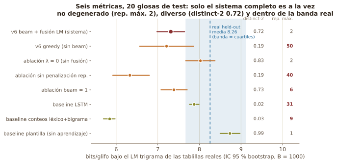
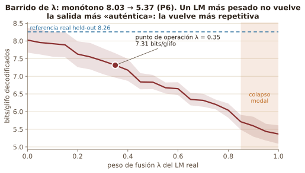
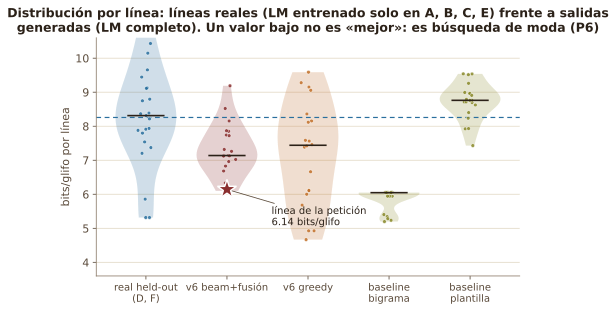
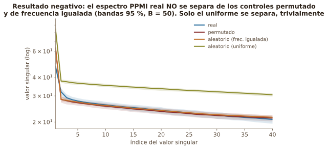

SUBMERSIÓN ESPECTRAL
Generación auditable de hipótesis para Rongorongo
David Astudillo · Spectral Submersion Project · 2026
1El problema
El rongorongo de Rapa Nui sigue sin descifrarse. No existe un corpus paralelo verificado rapanui ↔ rongorongo, y sin él ningún método puede aprender qué significa un glifo. El corpus que sobrevive cabe en una página: 5 460 glifos.
Lo que sí existe es la estadística interna de las tablillas: qué signos aparecen, cuánto se repiten, cuáles se siguen. La pregunta de esta investigación es exacta: ¿qué puede y qué no puede concluirse solo desde esa estadística?
2Lo que las matemáticas permiten saber
Si a cada glifo se le cambia la etiqueta de forma consistente, todas las estadísticas internas quedan idénticas (teorema T1, orbit-constancy). Por eso la estructura es demostrable, pero el significado absoluto no se puede decidir desde dentro (P7). Eso define tres niveles de afirmación:
C1 · EstructuraSeñal estadística demostrable contra nulos internos (permutación, frecuencia igualada, uniforme).
→
Este sistema está aquíC2 · HipótesisÓrdenes de preferencia rankeables entre candidatos; auditables, no falsables desde dentro.
→
C3 · SignificadoSemántica anclada, traducción real. Inalcanzable sin conocimiento externo independiente.
3Corpus rongorongo real
6
tablillas, A–F (transcripción Barthel, corpus RR)
941
tipos Barthel distintos
8.26
bits/glifo: referencia real held-out (LM trigrama entrenado en A, B, C, E; evaluado en D, F)
4El modelo
Glosa rapanuiLéxico de 232 tipos. Corpus paralelo sintético por necesidad lógica (T1): 60 000 pares glosa → glifo, restringidos por una hipótesis de clase (personas → serie 200–399, verbos → 400–599…). Cobertura 939/941 tipos.
→
TransformerEncoder-decoder, dmodel = 256, 8 cabezas, 4 + 4 capas, 5.8 M parámetros, 15 épocas. Salida: códigos Barthel reales, no símbolos inventados.
→
Beam search + LM trigrama realBeam 5, fusión superficial con un LM estimado en las tablillas reales (λ = 0.35), penalización a la tercera repetición seguida.
→
Secuencia Barthel candidataUna hipótesis C2: plausible, medible, auditable con seis métricas frente a la estadística real.
5Resultados

Sistema vs. baselines y ablaciones. Quitar la fusión cuesta 0.7 bits/glifo; sin penalización de repetición aparecen rachas de 40; el baseline por conteos logra bigramas perfectos (BA = 1.00) colapsando a distinct-2 = 0.03.

Barrido del peso de fusión λ. Predicción de P6 confirmada: los bits/glifo bajan monótonamente y para λ ≥ 0.85 la salida colapsa hacia la estadística degenerada del baseline por conteos.

Distribuciones por línea. Las salidas del sistema quedan por debajo de la media real (7.31 vs 8.26): sesgo de selección esperado en un decodificador que busca la moda, no evidencia de autenticidad.

Resultado negativo reportado. El espectro PPMI del corpus real no se separa de los controles: régimen de líneas cortas y vocabulario grande donde T3 no garantiza separación. También el benchmark icónico (Egipcio/Chino con referentes conocidos) no superó el umbral prefijado.
«El sistema no traduce rongorongo: genera hipótesis glíficas estadísticamente plausibles y auditables.»
Petición de mano · línea generada por el sistema
Ko kou taku vahine, e aroha au ki a kou, mo te ora tonu

«Tú eres mi esposa; te amo para toda la vida.»
002 002 · 004 004 · 280 280 · 450 · 063 063 · 004 004 · 002 002 · 004 004 · 430 · 022
Hipótesis C2 generada por el modelo — no traducción histórica demostrada.
Trazados vectoriales de glifos reales del corpus RR. Vahine (esposa) cae en 280 280: figuras humanas de la serie 200–399 de Barthel.
16 / 17glifos idénticos entre dos modelos entrenados por separado (v6 y v6 sin aumento)
24 / 26configuraciones del decodificador (beam 3–20, λ 0.20–0.50) conservan el núcleo 280 280 450 063 063 … 430 022
15 / 16transiciones entre glifos atestiguadas en las tablillas A–F
6.14bits/glifo bajo el LM real: en el extremo de mayor probabilidad del sistema (búsqueda de moda, P6), no prueba de autenticidad
6Qué sabemos · qué no sabemos
Sí podemos afirmar
- Existe estructura estadística en el corpus real (bigramas, comunidades; C1)
- Se generan secuencias Barthel plausibles: 100 % de vocabulario atestiguado, repetición máxima 2, distinct-2 0.72
- El comportamiento es cuantificable con seis métricas e intervalos bootstrap
- Estabilidad y controles: ablaciones, barrido λ, nulos de permutación con corrección BH
- Las hipótesis se pueden rankear y auditar (C2)
Todavía no podemos afirmar
- Una traducción semántica de ninguna secuencia
- Una lectura fonética de los glifos
- Una equivalencia palabra ↔ glifo: el mapa aprendido es nuestra hipótesis declarada, no un hallazgo
- Un desciframiento del rongorongo (C3 es indecidible desde la estadística interna, P7)
Siguiente frontera
Introducir anclajes externos independientes y probar predicciones verdaderamente fuera de muestra.
«Entre millones de secuencias posibles, esta fue la que elegimos para decirte que quiero construir mi vida contigo.»
Fuentes: Astudillo, «Submersión espectral de lenguajes perdidos» (manuscrito consolidado, 2026) · Spectral Submersion v3 (paper_v3) · reports/v3_evaluation_suite.json · reports/lambda_sweep.json · reports/propuesta_certeza.md · github.com/satisfymath/spectral-submersion